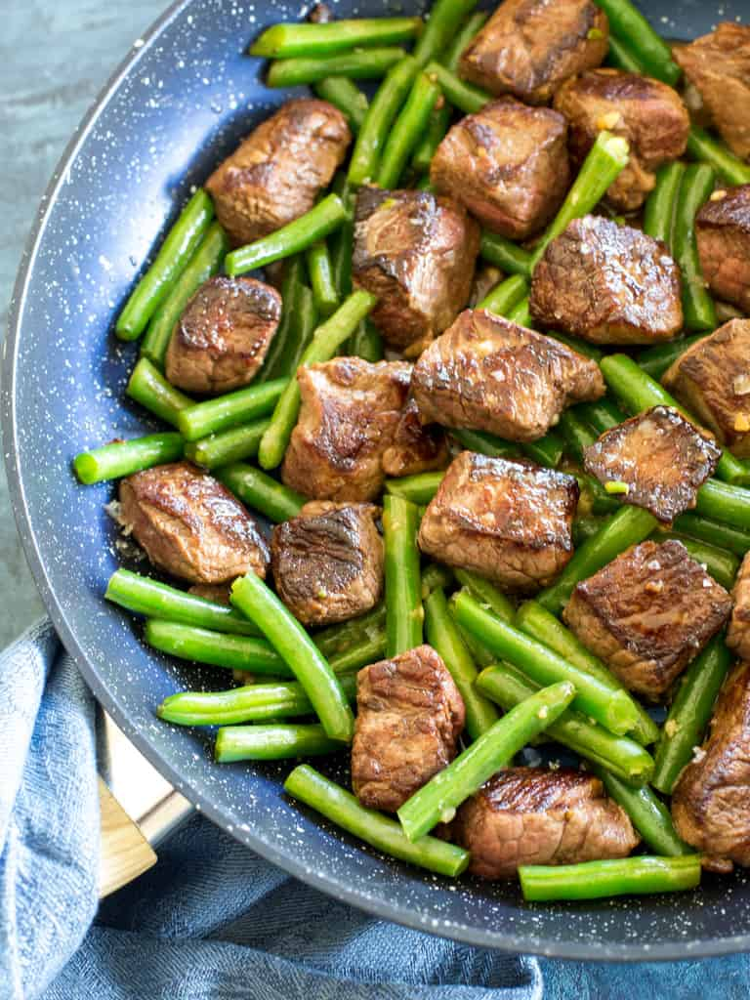

Garlic Butter Steak Bite

You can't go wrong with a nice cut of beef, garlic, and butter!
It's very quick, perfect for a quick lunch or dinner.
Don't forget to season the steak ahead with generous amount of salt and pepper!
Before we get to the ingredidents let me share with you some very useful tips ahead.
INGREDIENTS
- 2 tbps olive oil
- 700 g steak cut into 1-inch pieces,
- 4 cloves garlic, minced
- 3 tbsp butter
DIRECTIONS
- Season steak with salt and pepper.
- In a large skillet, heat olive oil over medium high heat.
- Cook the steak for 2-3 minutes per side or to desired doneness. Try not to move the steak, letting it sear on one side while it cooks.
- Reduce heat to low and add the butter and garlic. Stir until melted then serve.
It is all done. Enjoy your flavourful meat with some green beans!
To get some more fantastic recipes get back the to MAIN PAGE
Recipe based on this.